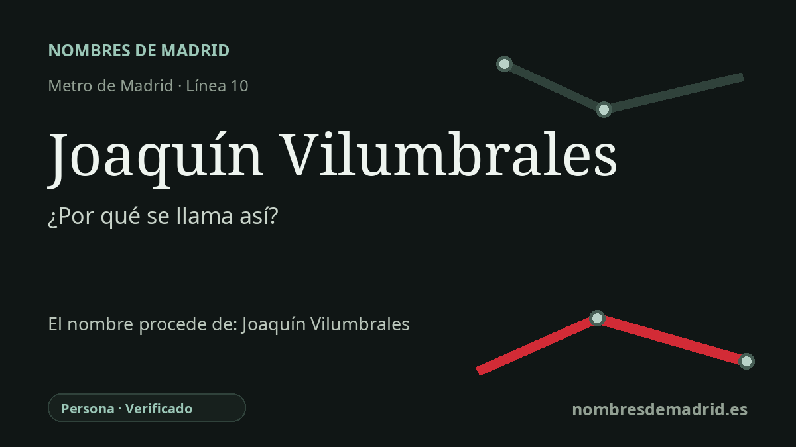

Publicado el · Investigación de Nombres de Madrid · Cómo verificamos cada origen · 6 fuentes consultadas
Respuesta rápida
La estación Joaquín Vilumbrales lleva el nombre de Joaquín Vilumbrales López (1941-1999), profesor y exalcalde de Alcorcón. En origen estaba prevista como Los Castillos, por el barrio donde se ubica.
La historia del nombre
El nombre de la estación es una conmemoración personal. Joaquín Vilumbrales homenajea a Joaquín Vilumbrales López (1941-1999), recordado en Alcorcón tanto por su trayectoria docente como por su breve etapa como alcalde.
Antes de llegar a la alcaldía, Vilumbrales estuvo muy vinculado al entorno de la estación. El Ayuntamiento de Alcorcón lo presenta como profesor y director del Instituto de Enseñanza Secundaria Los Castillos, precisamente el nombre del barrio que en un principio se esperaba que identificara la estación.
Su trayectoria política hizo que el nombre adquiriera una presencia especial en Alcorcón a finales del siglo XX. En 1995, El País lo describía como profesor de Física y Química en Los Castillos y concejal con varios mandatos, entonces candidato del PP a la alcaldía. En las elecciones municipales de 1999 su partido obtuvo 14 concejales en Alcorcón, suficientes para la mayoría, pero Vilumbrales falleció el 9 de septiembre de 1999 tras solo unos meses en el cargo.
El nombre ferroviario refleja un cambio deliberado de un topónimo de barrio a un nombre memorial. Una información de El País de 2003 sobre cambios de calles en Alcorcón señala que una de las estaciones de la línea 10 del municipio se llamó Joaquín Vilumbrales, en lugar del nombre inicialmente previsto de Los Castillos, a propuesta de Pablo Zúñiga. Por eso esta estación se aparta de muchos nombres suburbanos de Metro que se limitan a repetir el distrito, la calle o el desarrollo urbano cercano.
La estación entró en servicio dentro de la gran ampliación meridional del Metro de Madrid. La memoria de 2004 del CRTM indica que la prolongación de la línea 10 entre Colonia Jardín y Puerta del Sur se inauguró el 11 de abril de 2003 y que el ámbito tarifario de MetroSur incluía Joaquín Vilumbrales y Puerta del Sur en la línea 10. El origen general del nombre está verificado, aunque sigue siendo útil localizar el decreto o expediente exacto que formalizó la denominación de la estación.